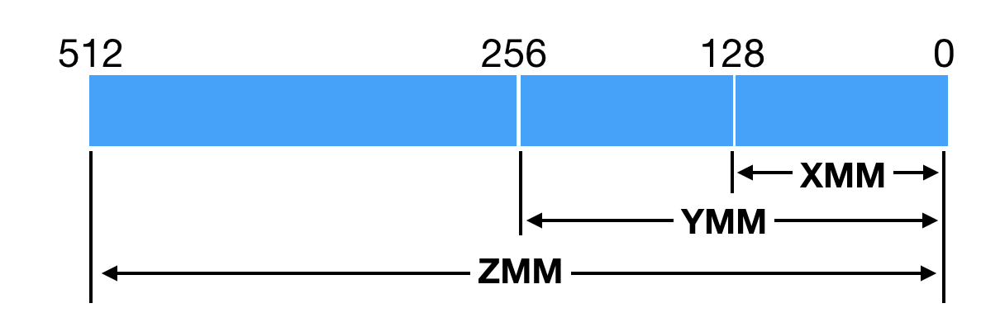
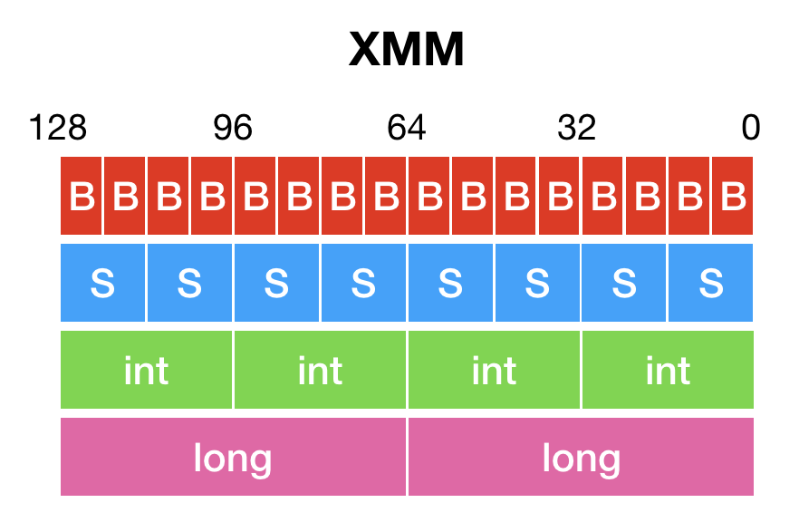
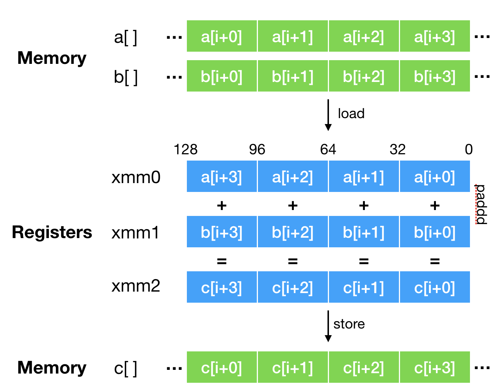

26 | 向量化
在上一篇的实践环节中，我给你留了一个题目：如何进一步优化下面这段代码。
void foo(byte[] dst, byte[] src) {
for (int i = 0; i < dst.length - 4; i += 4) {
dst[i] = src[i];
dst[i+1] = src[i+1];
dst[i+2] = src[i+2];
dst[i+3] = src[i+3];
}
... // post-loop
}
由于 X86_64 平台不支持内存间的直接移动，上面代码中的dst[i] = src[i]通常会被编译为两条内存访问指令：第一条指令把src[i]的值读取至寄存器中，而第二条指令则把寄存器中的值写入至dst[i]中。
因此，上面这段代码中的一个循环迭代将会执行四条内存读取指令，以及四条内存写入指令。
由于数组元素在内存中是连续的，当从src[i]的内存地址处读取 32 位的内容时，我们将一并读取src[i]至src[i+3]的值。同样，当向dst[i]的内存地址处写入 32 位的内容时，我们将一并写入dst[i]至dst[i+3]的值。
通过综合这两个批量操作，我们可以使用一条内存读取指令以及一条内存写入指令，完成上面代码中循环体内的全部工作。如果我们用x[i:i+3]来指代x[i]至x[i+3]合并后的值，那么上述优化可以被表述成如下所示的代码：
void foo(byte[] dst, byte[] src) {
for (int i = 0; i < dst.length - 4; i += 4) {
dst[i:i+3] = src[i:i+3];
}
... // post-loop
}
SIMD 指令
在前面的示例中，我们使用的是 byte 数组，四个数组元素并起来也才 4 个字节。如果换成 int 数组，或者 long 数组，那么四个数组元素并起来将会是 16 字节或 32 字节。
我们知道，X86_64 体系架构上通用寄存器的大小为 64 位（即 8 个字节），无法暂存这些超长的数据。因此，即时编译器将借助长度足够的 XMM 寄存器，来完成 int 数组与 long 数组的向量化读取和写入操作。（为了实现方便，byte 数组的向量化读取、写入操作同样使用了 XMM 寄存器。）
所谓的 XMM 寄存器，是由 SSE（Streaming SIMD Extensions）指令集所引入的。它们一开始仅为 128 位。自从 X86 平台上的 CPU 开始支持 AVX（Advanced Vector Extensions）指令集后（2011 年），XMM 寄存器便升级为 256 位，并更名为 YMM 寄存器。原本使用 XMM 寄存器的指令，现将使用 YMM 寄存器的低 128 位。
前几年推出的 AVX512 指令集，更是将 YMM 寄存器升级至 512 位，并更名为 ZMM 寄存器。HotSpot 虚拟机也紧跟时代，更新了不少基于 AVX512 指令集以及 ZMM 寄存器的优化。不过，支持 AVX512 指令集的 CPU 都比较贵，目前在生产环境中很少见到。

SSE 指令集以及之后的 AVX 指令集都涉及了一个重要的概念，那便是单指令流多数据流（Single Instruction Multiple Data，SIMD），即通过单条指令操控多组数据的计算操作。这些指令我们称之为 SIMD 指令。
SIMD 指令将 XMM 寄存器（或 YMM 寄存器、ZMM 寄存器）中的值看成多个整数或者浮点数组成的向量，并且批量进行计算。

举例来说，128 位 XMM 寄存器里的值可以看成 16 个 byte 值组成的向量，或者 8 个 short 值组成的向量，4 个 int 值组成的向量，两个 long 值组成的向量；而 SIMD 指令PADDB、PADDW、PADDD以及PADDQ，将分别实现 byte 值、short 值、int 值或者 long 值的向量加法。
void foo(int[] a, int[] b, int[] c) {
for (int i = 0; i < c.length; i++) {
c[i] = a[i] + b[i];
}
}
上面这段代码经过向量化优化之后，将使用PADDD指令来实现c[i:i+3] = a[i:i+3] + b[i:i+3]。其执行过程中的数据流如下图所示，图片源自 Vladimir Ivanov 的演讲 [1]。下图中内存的右边是高位，寄存器的左边是高位，因此数组元素的顺序是反过来的。

也就是说，原本需要c.length次加法操作的代码，现在最少只需要c.length/4次向量加法即可完成。因此，SIMD 指令也被看成 CPU 指令级别的并行。
这里
c.length/4次是理论值。现实中，C2 还将考虑缓存行对齐等因素，导致能够应用向量化加法的仅有数组中间的部分元素。
使用 SIMD 指令的 HotSpot Intrinsic
SIMD 指令虽然非常高效，但是使用起来却很麻烦。这主要是因为不同的 CPU 所支持的 SIMD 指令可能不同。一般来说，越新的 SIMD 指令，它所支持的寄存器长度越大，功能也越强。
目前几乎所有的 X86_64 平台上的 CPU 都支持 SSE 指令集，绝大部分支持 AVX 指令集，三四年前量产的 CPU 支持 AVX2 指令集，最近少数服务器端 CPU 支持 AVX512 指令集。AVX512 指令集的提升巨大，因为它不仅将寄存器长度增大至 512 字节，而且引入了非常多的新指令。
为了能够尽量利用新的 SIMD 指令，我们需要提前知道程序会被运行在支持哪些指令集的 CPU 上，并在编译过程中选择所支持的 SIMD 指令中最新的那些。
或者，我们可以在编译结果中纳入同一段代码的不同版本，每个版本使用不同的 SIMD 指令。在运行过程中，程序将根据 CPU 所支持的指令集，来选择执行哪一个版本。
虽然程序中包含当前 CPU 可能不支持的指令，但是只要不执行到这些指令，程序便不会出问题。如果不小心执行到这些不支持的指令，CPU 会触发一个中断，并向当前进程发出
sigill信号。
不过，这对于使用即时编译技术的 Java 虚拟机来说，并不是一个大问题。
我们知道，Java 虚拟机所执行的 Java 字节码是平台无关的。它首先会被解释执行，而后反复执行的部分才会被 Java 虚拟机即时编译为机器码。换句话说，在进行即时编译的时候，Java 虚拟机已经运行在目标 CPU 之上，可以轻易地得知其所支持的指令集。
然而，Java 字节码的平台无关性却引发了另一个问题，那便是 Java 程序无法像 C++ 程序那样，直接使用由 Intel 提供的，将被替换为具体 SIMD 指令的 intrinsic 方法 [2]。
HotSpot 虚拟机提供的替代方案是 Java 层面的 intrinsic 方法，这些 intrinsic 方法的语义要比单个 SIMD 指令复杂得多。在运行过程中，HotSpot 虚拟机将根据当前体系架构来决定是否将对该 intrinsic 方法的调用替换为另一高效的实现。如果不，则使用原本的 Java 实现。
举个例子，Java 8 中Arrays.equals(int[], int[])的实现将逐个比较 int 数组中的元素。
public static boolean equals(int[] a, int[] a2) {
if (a==a2)
return true;
if (a==null || a2==null)
return false;
int length = a.length;
if (a2.length != length)
return false;
// 关键循环
for (int i=0; i<length; i++)
if (a[i] != a2[i])
return false;
return true;
}
对应的 intrinsic 高效实现会将数组的多个元素加载至 XMM/YMM/ZMM 寄存器中，然后进行按位比较。如果两个数组相同，那么其中若干个元素合并而成的值也相同，其按位比较也应成功。反过来，如果按位比较失败，则说明两个数组不同。
使用 SIMD 指令的 HotSpot intrinsic 是虚拟机开发人员根据其语义定制的，因而性能相当优越。
不过，由于开发成本及维护成本较高，这种类型的 intrinsic 屈指可数，如用于复制数组的System.arraycopy和Arrays.copyOf，用于比较数组的Arrays.equals，以及 Java 9 新加入的Arrays.compare和Arrays.mismatch，以及字符串相关的一些方法String.indexOf、StringLatin1.inflate。
Arrays.copyOf将调用System.arraycopy，实际上只有后者是 intrinsic。在 Java 9 之后，数组比较真正的 intrinsic 是ArraySupports.vectorizedMismatch方法，而Arrays.equals、Arrays.compare和Arrays.mismatch将调用至该方法中。
另外，这些 intrinsic 方法只能做到点覆盖，在不少情况下，应用程序并不会用到这些 intrinsic 的语义，却又存在向量化优化的机会。这个时候，我们便需要借助即时编译器中的自动向量化（auto vectorization）。
自动向量化
即时编译器的自动向量化将针对能够展开的计数循环，进行向量化优化。如前面介绍过的这段代码，即时编译器便能够自动将其展开优化成使用PADDD指令的向量加法。
void foo(int[] a, int[] b, int[] c) {
for (int i = 0; i < c.length; i++) {
c[i] = a[i] + b[i];
}
}
关于计数循环的判定，我在上一篇介绍循环优化时已经讲解过了，这里我补充几点自动向量化的条件。
- 循环变量的增量应为 1，即能够遍历整个数组。
- 循环变量不能为 long 类型，否则 C2 无法将循环识别为计数循环。
- 循环迭代之间最好不要有数据依赖，例如出现类似于
a[i] = a[i-1]的语句。当循环展开之后，循环体内存在数据依赖，那么 C2 无法进行自动向量化。 - 循环体内不要有分支跳转。
- 不要手工进行循环展开。如果 C2 无法自动展开，那么它也将无法进行自动向量化。
我们可以看到，自动向量化的条件较为苛刻。而且，C2 支持的整数向量化操作并不多，据我所致只有向量加法，向量减法，按位与、或、异或，以及批量移位和批量乘法。C2 还支持向量点积的自动向量化，即两两相乘再求和，不过这需要多条 SIMD 指令才能完成，因此并不是十分高效。
为了解决向量化 intrinsic 以及自动向量化覆盖面过窄的问题，我们在 OpenJDK 的 Paname 项目 [3] 中尝试引入开发人员可控的向量化抽象。
该抽象将提供一套通用的跨平台 API，让 Java 程序能够定义诸如IntVector<S256Bits>的向量，并使用由它提供的一系列向量化 intrinsic 方法。即时编译器负责将这些 intrinsic 的调用转换为符合当前体系架构 /CPU 的 SIMD 指令。如果你感兴趣的话，可以参考 Vladimir Ivanov 今年在 JVMLS 上的演讲 4。
总结与实践
今天我介绍了即时编译器中的向量化优化。
向量化优化借助的是 CPU 的 SIMD 指令，即通过单条指令控制多组数据的运算。它被称为 CPU 指令级别的并行。
HotSpot 虚拟机运用向量化优化的方式有两种。第一种是使用 HotSpot intrinsic，在调用特定方法的时候替换为使用了 SIMD 指令的高效实现。Intrinsic 属于点覆盖，只有当应用程序明确需要这些 intrinsic 的语义，才能够获得由它带来的性能提升。
第二种是依赖即时编译器进行自动向量化，在循环展开优化之后将不同迭代的运算合并为向量运算。自动向量化的触发条件较为苛刻，因此也无法覆盖大多数用例。
今天的实践环节，我们来观察一下即时编译器的自动向量化的自适配性。
在支持 256 位 YMM 寄存器的机器上，C2 会根据循环回边的执行次数以及方法的执行次数来推测每个循环的次数。如果超过一定值，C2 会采用基于 256 位 YMM 寄存器的指令，相比起基于 128 位 XMM 寄存器的指令而言，单指令能处理的数据翻了一倍。
请采用 Java 9 以上的版本运行下述代码。（Java 8 始终采用基于 128 位 XMM 寄存器指令的 Bug 可能仍未修复。）
// Run with
// java -XX:CompileCommand='dontinline VectorizationTest.foo' -XX:CompileCommand='print VectorizationTest.foo' -XX:-TieredCompilation VectorizationTest
public class VectorizationTest {
static void foo(int[] a, int[] b, int[] c) {
for (int i = 0; i < a.length; i++) {
c[i] = a[i] + b[i];
}
}
public static void main(String[] args) throws InterruptedException {
int[] a = new int[] { 1, 2, 3, 4, 5, 6, 7, 8, 1, 2, 3, 4, 5, 6, 7, 8 };
int[] c = new int[16];
for (int i = 0; i < 20_000; i++) {
foo(a, a, c);
}
Thread.sleep(2000);
}
}
输出将包含如下机器码：
0x000000011ce7c650: vmovdqu xmm0,XMMWORD PTR [rdx+rbx*4+0x10]
0x000000011ce7c656: vpaddd xmm0,xmm0,XMMWORD PTR [rsi+rbx*4+0x10]
0x000000011ce7c65c: vmovdqu XMMWORD PTR [rcx+rbx*4+0x10],xmm0
如果替换为：
int[] a = new int[] { 1, 2, 3, 4, 5, 6, 7, 8, 1, 2, 3, 4, 5, 6, 7, 8, 1, 2, 3, 4, 5, 6, 7, 8, 1, 2, 3, 4, 5, 6, 7, 8 };
int[] c = new int[32];
输出将包含如下机器码：
0x000000010ff04d9c: vmovdqu ymm0,YMMWORD PTR [rdx+rbx*4+0x10]
0x000000010ff04da2: vpaddd ymm0,ymm0,YMMWORD PTR [rsi+rbx*4+0x10]
0x000000010ff04da8: vmovdqu YMMWORD PTR [rcx+rbx*4+0x10],ymm0
---
你可以将foo方法更改为下述代码：
static void foo(int[] a) {
for (int i = 4; i < a.length; i++) {
a[i] = a[i - 4];
}
}
重复上述实验，看看会发生什么。
[1] http://cr.openjdk.java.net/~vlivanov/talks/2017_Vectorization_in_HotSpot_JVM.pdf [2] https://software.intel.com/sites/landingpage/IntrinsicsGuide/ [3] http://openjdk.java.net/projects/panama/